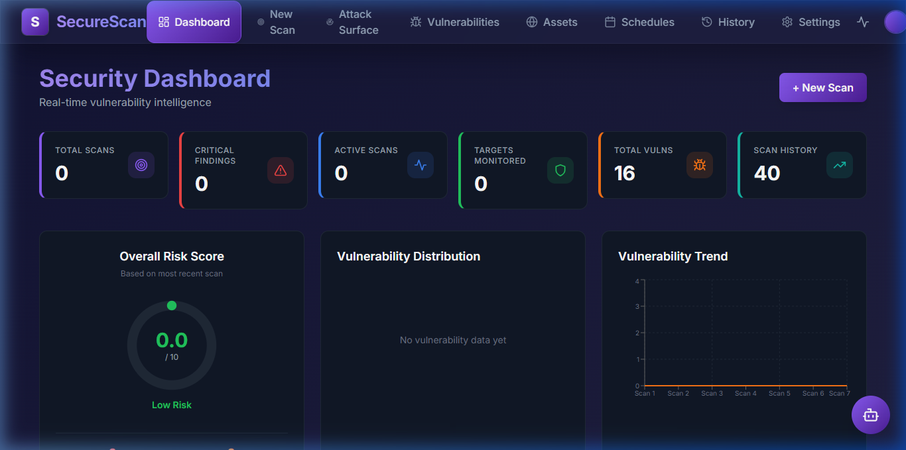
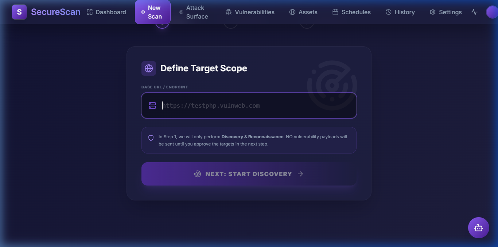
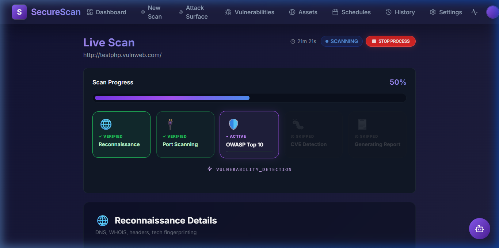
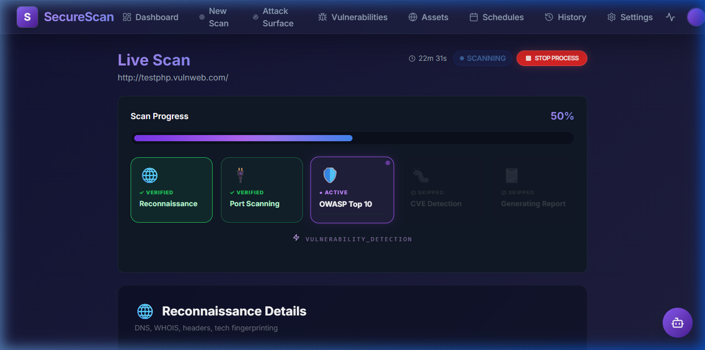
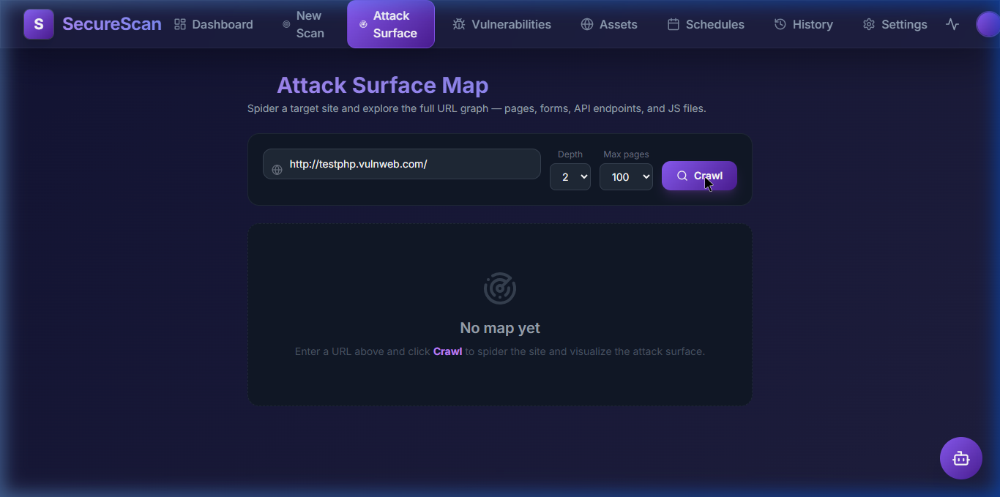
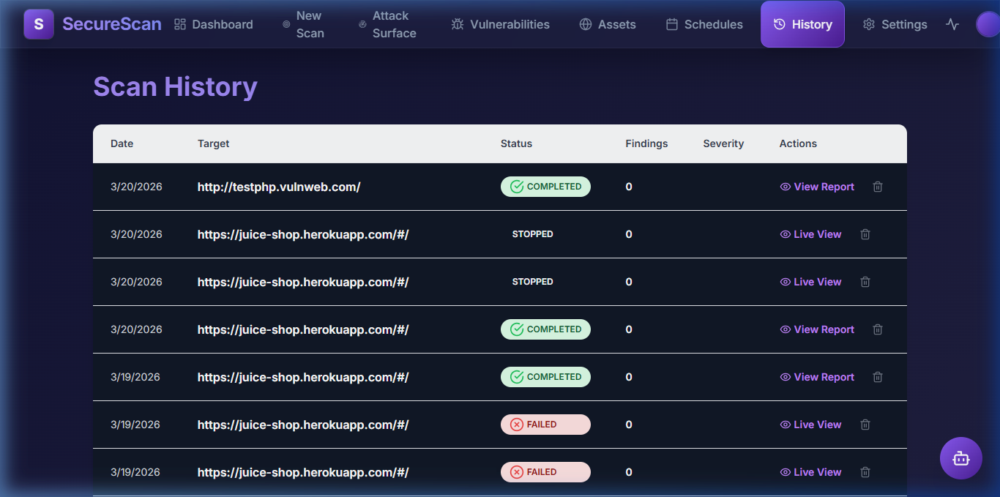

School of Technology
Final Year Project II
A comprehensive guide to effectively using the SecureScan Vulnerability Scanner.
Copyright © 2026 The SecureScan Team.
All rights reserved. No part of this publication may be reproduced, distributed, or transmitted in any form without the prior written permission of the publisher.
The SecureScan software is provided "as is", without warranty of any kind. This tool is designed for authorized educational and professional security testing only. Do not use this software against any network or application you do not own or possess explicit permission to scan.
Welcome to the SecureScan User Training Manual. This guide is designed to help non-technical users, IT Administrators, and Security Professionals understand and operate the SecureScan web application efficiently. Whether you are running your first vulnerability scan or analyzing a complex attack surface graph, this guide will walk you through each procedural step.
How to use this guide:
SecureScan is a modern vulnerability scanning framework featuring automated reconnaissance, endpoint discovery, and high-speed vulnerability detection using open-source engines like subfinder, httpx, katana, and nuclei. This system allows you to scan domains, map out the architecture, and identify critical security flaws—all from a sleek, dark-mode glassmorphism dashboard.
This manual is tailored for users who need to interact with SecureScan's web interface to initiate security tests and interpret the results. No complex command-line experience is required, though basic networking knowledge is helpful.
To get started with SecureScan, ensure your environment is running. The system starts via Docker containers (Frontend, Backend, and Scanner Core). Once running, open your web browser (e.g., Firefox, Chrome) and navigate to the SecureScan dashboard.
Input:
http://localhost:5173/in your browser's address bar.Output: The SecureScan Dashboard overview displays your total scans, findings, and active schedules.
(Screenshot: SecureScan Dashboard)

This section breaks down the major functionalities of SecureScan into actionable, step-by-step tasks.
SecureScan uses a 3-step wizard to guide you through scan configuration.
http://testphp.vulnweb.com/).(Screenshot: Configuring a Target)

The system will automatically redirect you to the Live Scan page where you can monitor real-time progress.
When a scan is running, it sequentially moves through Reconnaissance, Crawling, and Vulnerability analysis.
(Screenshot: Active Reconnaissance Phase)

(Screenshot: Live Vulnerability Detection)

4. If you need to halt the process, press the Stop Process button in the top corner. If you choose "Stop Process", the scan will terminate safely and save partial results.
The Attack Surface map visualizes the website's structure using interactive crawler data.
(Screenshot: Attack Surface Crawl Configuration)

4. Wait for the mapping sequence to complete. The tool will display a connected node graph.
Completed, Failed, Interrupted), and Target URL are visible.(Screenshot: Scan History View)

SecureScan features a flexible AI assistant that supports multiple providers (OpenAI, Anthropic, Google, and Ollama).
Advanced users can add their own attack vectors by modifying the files in scanner-core/payloads/.
.txt (one per line) and .json (structured metadata).The scanner automatically performs service version detection and matches identified products against the NIST National Vulnerability Database (NVD).
Q: What does the "Smart Crawl" do?
A: It intelligently routes requests to avoid duplicate scanning loops in the backend, saving time during the Discovery phase.
Q: Can I close the browser while a scan runs?
A: Yes! SecureScan's backend runs asynchronously. You can close your browser window, return later, and check the History tab to see the final results.
| Message | Meaning | Resolution |
|---|---|---|
Scanner core unreachable |
The Node.js backend cannot speak to the Python Engine. | Check if the scanner-core Docker container has stopped. |
0 Nodes Found |
The crawler was blocked or you requested a site with no sub-pages. | Ensure the target is reachable, and you do not have a trailing hash (#) in the URL. |
Could not load crawl graph |
You navigated to an Attack Surface map for an empty scan. | Run a new crawl or wait for the discovery phase to finalize. |